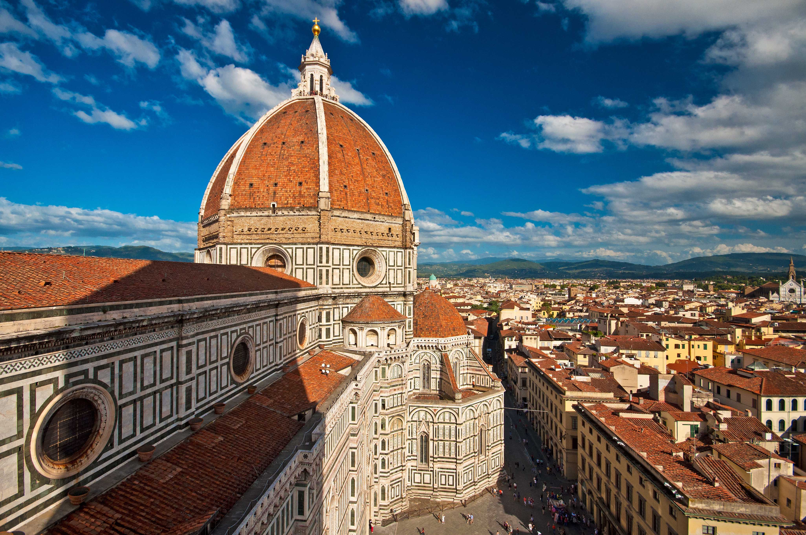
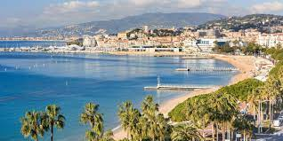
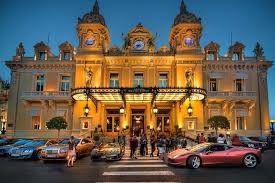

Здравствуйте! Меня зовут Антон!
Я ваш личный гид по европейским городам. Я могу вам рассказать про достопримечательногсти
и историю европейских городов.

Флоренция, столица итальянского региона Тоскана, славится произведениями искусства и архитектурой эпохи Возрождения.
Одна из главных достопримечательностей города – кафедральный собор Дуомо.
Его покрытый черепицей купол был создан по проекту Брунеллески, а колокольню проектировал Джотто.
Среди экспонатов Галереи Академии можно отметить скульптуру "Давид" Микеланджело.
В галерее Уффици хранятся "Рождение Венеры" Боттичелли и "Благовещение" Леонардо да Винчи.
Канны, Лазурный берег, Франция

Канны – курортный город на Лазурном Берегу, который известен благодаря международному кинофестивалю.
На бульваре Круазетт, который тянется вдоль песчаных пляжей, сосредоточены самые элитные бутики и напоминающие дворцы отели.
В Каннах расположен Дворец фестивалей и конгрессов – современное здание, к которому ведет красная ковровая дорожка.
Возле Дворца можно увидеть Аллею звезд с отпечатками ладоней знаменитостей.
Рим, Италия
Рим – столица Италии, огромный многонациональный город, история которого насчитывает почти три тысячи лет.
Его архитектура и произведения искусства оказали огромное влияние на мировую культуру.
Развалины античного Форума и Колизея демонстрируют былое величие Римской империи.
Ватикан, резиденция руководства Римско-католической церкви, пользуется огромной популярностью
у туристов благодаря собору Святого Петра и многочисленным музеям.
Среди них – Сикстинская капелла, где можно увидеть знаменитые фрески Микеланджело.
Монако

Монако – город и крошечное государство на побережье Средиземного моря, которое граничит с Францией.
Оно известно своими шикарными казино, причалом, на котором швартуются дорогие яхты, и этапом престижной
автогонки "Формула-1", который проходит на улицах Монако. В крупнейшем районе страны Монте-Карло
расположены великолепный комплекс казино, построенный в Прекрасную эпоху, и изысканно украшенный
оперный театр. Здесь открыто множество роскошных отелей, магазинов, ночных клубов и ресторанов.
Лондон
Лондон – столица Англии и Соединенного Королевства. История этого современного города уходит во времена римлян.
В самом центре Лондона находится здание парламента – Вестминстерский дворец, а также знаменитая
часовая башня Биг-Бен и Вестминстерское аббатство. Эта церковь является местом коронации британских
монархов. На противоположном берегу Темзы расположено колесо обозрения "Лондонский глаз",
с которого открывается панорамный вид не только на южный берег, но и на весь город.


 Лондон – столица Англии и Соединенного Королевства. История этого современного города уходит во времена римлян.
В самом центре Лондона находится здание парламента – Вестминстерский дворец, а также знаменитая
часовая башня Биг-Бен и Вестминстерское аббатство. Эта церковь является местом коронации британских
монархов. На противоположном берегу Темзы расположено колесо обозрения "Лондонский глаз",
с которого открывается панорамный вид не только на южный берег, но и на весь город.
Лондон – столица Англии и Соединенного Королевства. История этого современного города уходит во времена римлян.
В самом центре Лондона находится здание парламента – Вестминстерский дворец, а также знаменитая
часовая башня Биг-Бен и Вестминстерское аббатство. Эта церковь является местом коронации британских
монархов. На противоположном берегу Темзы расположено колесо обозрения "Лондонский глаз",
с которого открывается панорамный вид не только на южный берег, но и на весь город.